Todo problema apontado no checklist vira uma ordem de serviço com prazo. A frota resolve, fecha com evidência e os indicadores mostram como está a operação.
| Onde | Endereço | Para quê |
|---|---|---|
| App | checklist-atual.onespot.com.br | Fazer checklists no celular. Pode ser instalado como aplicativo. |
| Portal do gestor | checklist-atual.onespot.com.br/gestao | OS, indicadores, relatórios e cadastros, no computador. |
O cargo é definido na ficha do usuário. Ele decide o que a pessoa vê no app e no portal.
| Cargo | No app | No portal |
|---|---|---|
| Motorista | Faz os checklists liberados para motorista, em geral o diário. Vê o próprio histórico. | Não usa. |
| Mecânico | Faz inspeções, preventivas e preditivos liberados para mecânico. Pode fazer o diário quando liberado. | Resumo, Preventivas, Lançamentos, Painel OS, Relatórios e Ativos (só leitura). Inicia, reprograma e fecha OS. |
| Administrador | O mesmo que o mecânico, mais "Ver como motorista". | Tudo: indicadores, OS, cadastros, usuários e parâmetros. Reabre OS. Aprova motoristas e mecânicos. |
| Admin master | Tudo. | Suporte OneSpot. Também cria administradores e exclui OS e checklists lançados por engano. |
O acesso é pelo CPF e por uma senha de 6 números. É o mesmo login no app e no portal.
O app abre pelo ícone, em tela cheia, e se atualiza sozinho quando há versão nova.
Mecânicos e administradores entram na aba Checklists. Primeiro escolhem o tipo de checklist, depois o equipamento.
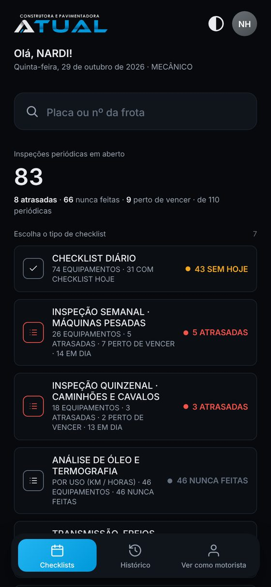
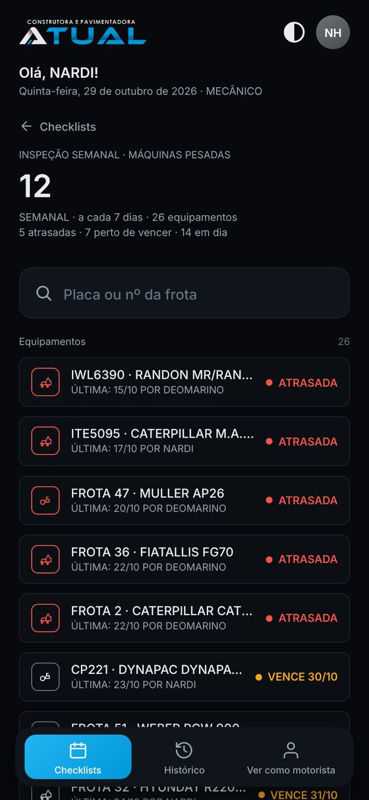
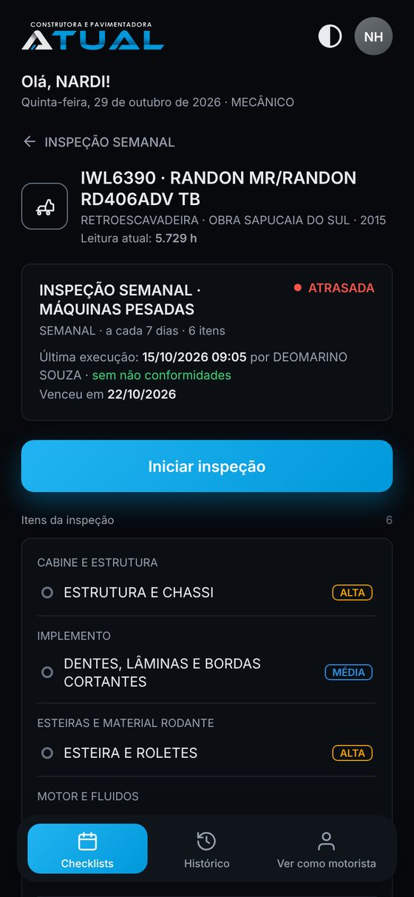
| Situação | Significa |
|---|---|
| Atrasada | Passou do prazo da frequência (dias) ou do intervalo de uso (km ou horas). |
| Vence / Faltam | Perto de vencer. A margem é definida em Parâmetros (padrão: 10% do intervalo). |
| Nunca feita | Nenhuma execução registrada neste ativo. |
| Em dia | Feita dentro do prazo. |
| Sob demanda | Sem frequência. É feita quando a frota julgar necessário. |
A busca do topo procura em todos os tipos de uma vez. Ler o QR do ativo com a câmera também filtra as inspeções daquele ativo.
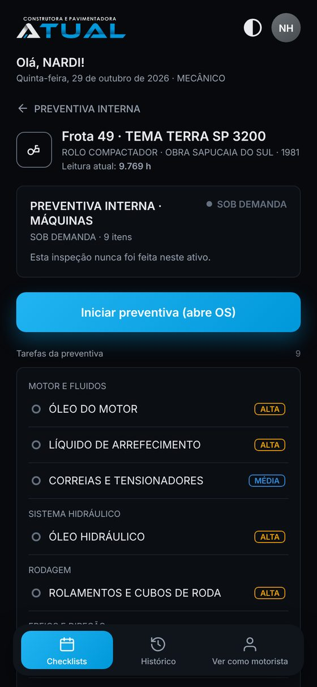
Preventiva não conta para SLA, MTTR, MTBF nem conformidade.
Revisão que inclui outra (a COMPLETA inclui a BÁSICA) conta as duas como feitas.
Toda não conformidade vira uma OS no Painel OS. A ordem é pela criticidade e pelo prazo.
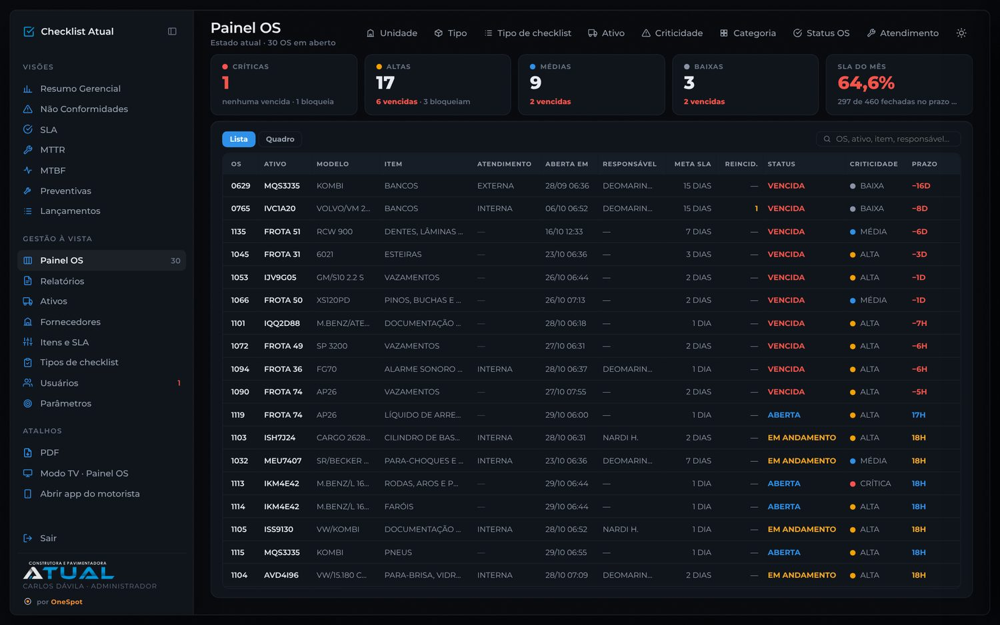
| Situação | O que acontece |
|---|---|
| Aberta | Nasce no checklist com o prazo do item. O prazo conta da abertura. |
| Em andamento | Alguém tocou em Iniciar atendimento e escolheu Interna (equipe da Atual) ou Externa (oficina ou prestador). |
| Vencida | Passou do prazo sem fechar. Conta como fora do SLA. |
| Fechada | Serviço concluído com evidência. Se o ativo estava bloqueado, volta a ser liberado. |
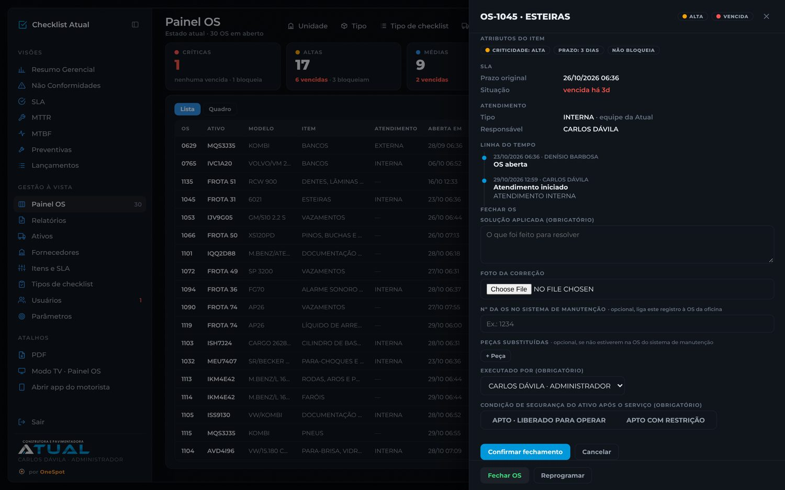
| Campo | Regra |
|---|---|
| Solução aplicada | Obrigatório. Descreva o que foi feito. |
| Foto da correção | Recomendada. Sem foto, a descrição precisa explicar o serviço. |
| Nº da OS no sistema de manutenção | Opcional. Liga o registro à OS da oficina. |
| Peças substituídas | Opcional, quando não estiverem na OS do sistema de manutenção. |
| Executado por | Obrigatório. Quem fez o serviço. |
| Condição de segurança | Obrigatório. Apto, liberado para operar ou Apto com restrição (descreva a restrição). |
| Atendimento externo | Informe o fornecedor. Custo e nota fiscal ou orçamento podem ser anexados. |
Os filtros do topo (período, unidade, tipo de ativo, ativo, criticidade e outros) valem para todas as telas. O portal se atualiza sozinho a cada 30 segundos.
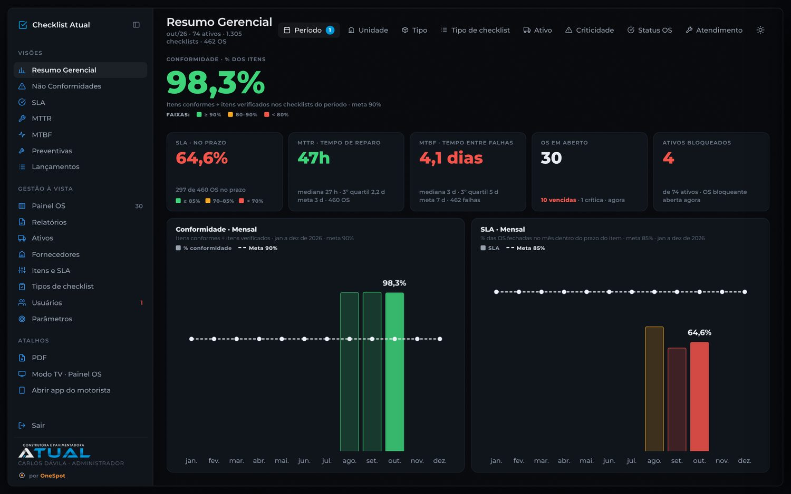
| Indicador | Como é calculado | Melhor |
|---|---|---|
| Conformidade | Itens conformes ÷ itens verificados nos checklists do período. | Maior |
| SLA | % das OS fechadas dentro do prazo do item. | Maior |
| MTTR | Tempo médio da abertura ao fechamento das OS. | Menor |
| MTBF | Tempo médio entre falhas do mesmo ativo, em dias e em km ou horas. Reincidência não conta como falha nova. | Maior |
As telas Não Conformidades, SLA, MTTR e MTBF abrem cada indicador por tipo, ativo, item, categoria, motorista ou mecânico. A coluna YTD mostra o acumulado do ano.
Uma linha por ativo com revisão programada: última revisão, próxima, leitura atual, quanto falta e a situação (no prazo, em atenção, vencida ou sem histórico). Revisões que vencem juntas aparecem na mesma linha.
Para ativos que já tinham revisão antes do sistema, o administrador informa o ponto de partida (data e leitura da última revisão) na ficha do ativo. Isso não conta como checklist.
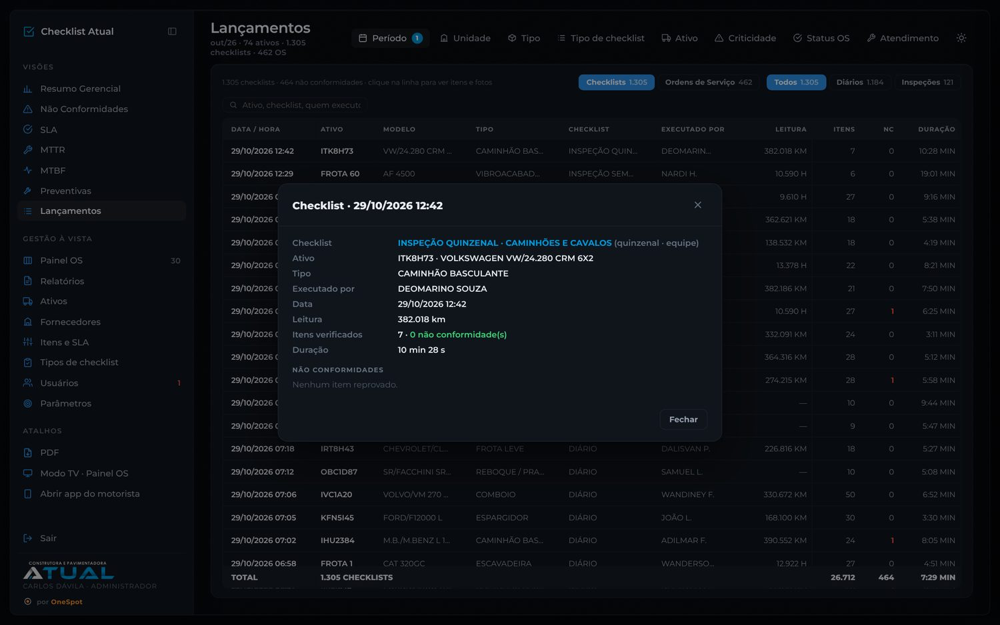
Lançamentos lista todos os checklists e todas as OS do período. Toda tabela ordena por qualquer coluna.
Relatórios gera, com os filtros do topo, em Excel (para análise) ou PDF (para enviar ou imprimir):
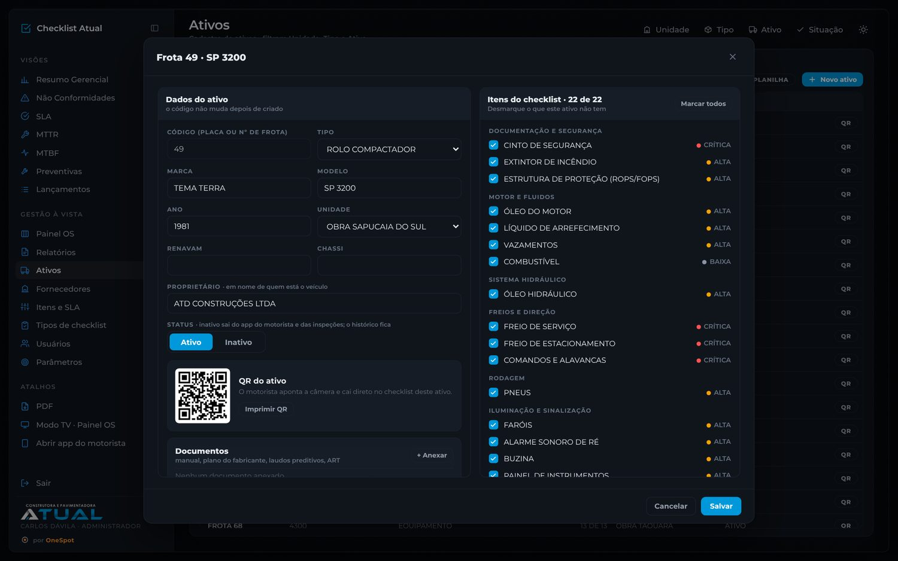
O catálogo de itens que os checklists verificam. Cada item tem três atributos independentes.
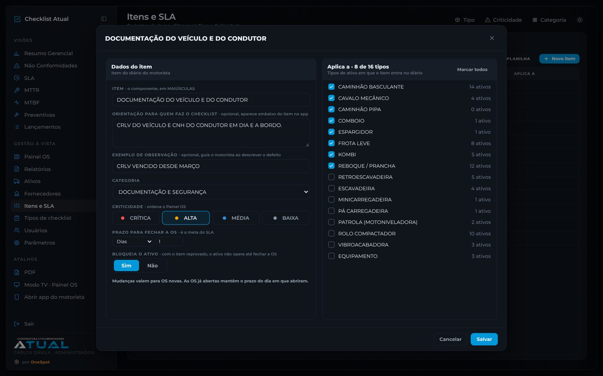
| Atributo | Para que serve |
|---|---|
| Criticidade | Crítica, alta, média ou baixa. Ordena o Painel OS. |
| Prazo | Meta do SLA, em minutos, horas ou dias, contada da abertura da OS. |
| Bloqueia | Com o item reprovado, o ativo fica Não opere até a OS fechar. |
Um item crítico pode ter prazo curto (farol, 1 hora) ou longo (embreagem, 15 dias). Os três atributos não dependem um do outro.
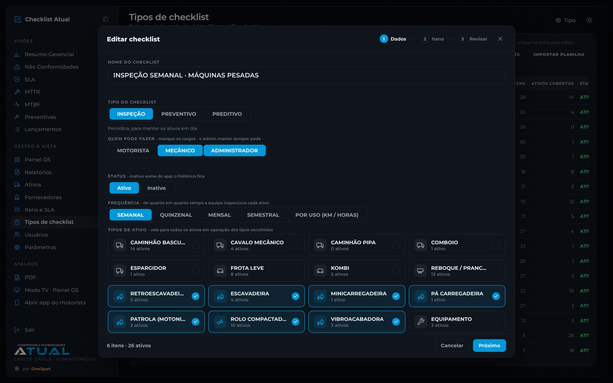
| Tipo | Uso | Frequência |
|---|---|---|
| Diário | Um por tipo de ativo. Os itens vêm de Itens e SLA. | Todo dia, antes de operar |
| Inspeção | Verificação periódica pela equipe. | Semanal, quinzenal, mensal, semestral ou por uso |
| Preventivo | Revisões do plano de manutenção. Abre OS. | Sob demanda, por tempo ou por uso |
| Preditivo | Análise de óleo, termografia e similares. | Sob demanda, por tempo ou por uso |
O diário abre com os cargos e depois os itens, com o botão Desligar diário. Diário desligado: ninguém faz checklist diário naquele tipo de ativo.
Excluir só aparece para checklist sem nenhuma execução. Com histórico, desative.
Importar planilha: baixe o template, preencha e envie. O assistente mostra a prévia antes de salvar.
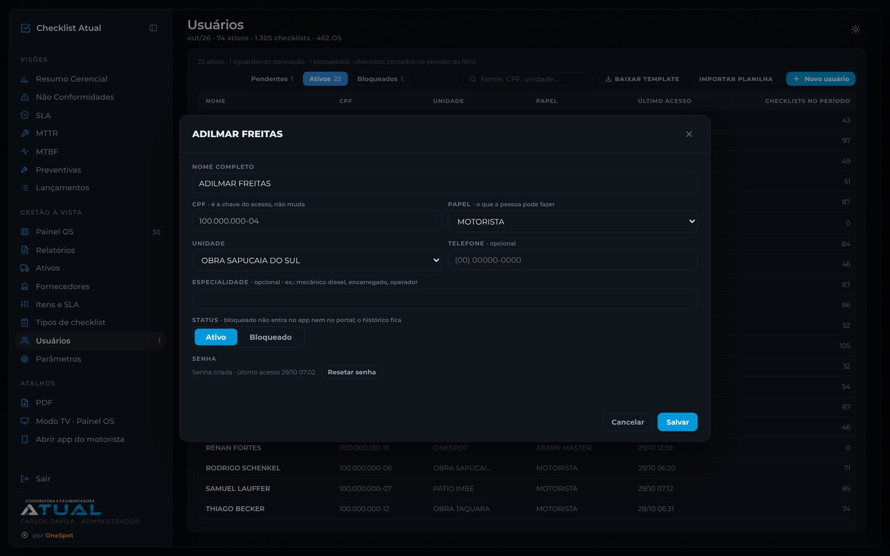
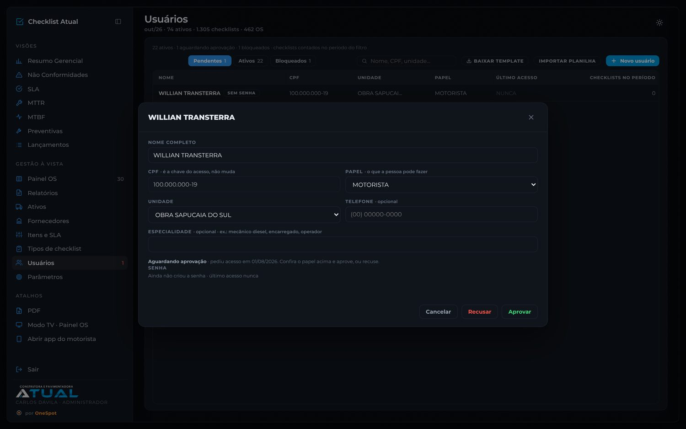
Fornecedores: oficinas e prestadores usados no fechamento de OS com atendimento externo. Inativo some da lista do fechamento.
Parâmetros: metas e faixas de cor de Conformidade, SLA, MTTR e MTBF, e a margem de "em atenção" das preventivas. Toda mudança fica registrada em "Últimas alterações".
Template e importação: Ativos, Itens, Usuários, Fornecedores e Tipos de checklist aceitam planilha. Linha com chave igual atualiza; chave nova cria.
Confira se o ativo está ativo em Ativos e se o diário do tipo está ligado e liberado para Motorista em Tipos de checklist. A busca aceita parte da placa ou o nº da frota, sem hífen.
Sem sinal, o app avisa "Sem conexão. Tente de novo." e guarda as respostas no celular. Basta tocar em Finalizar de novo quando o sinal voltar. Enviar duas vezes não duplica o checklist.
A OS do item que bloqueia ainda está aberta. Feche a OS no Painel OS com a condição de segurança. O ativo volta a ser liberado na hora.
Abra o checklist em Tipos de checklist e confira se Mecânico está marcado em "Quem pode fazer".
É o esperado. Mudanças valem para OS novas.
Feche o app por completo e abra de novo. No computador, recarregue a página duas vezes.
Checklist Atual · Construtora e Pavimentadora Atual · por OneSpot · outubro de 2026